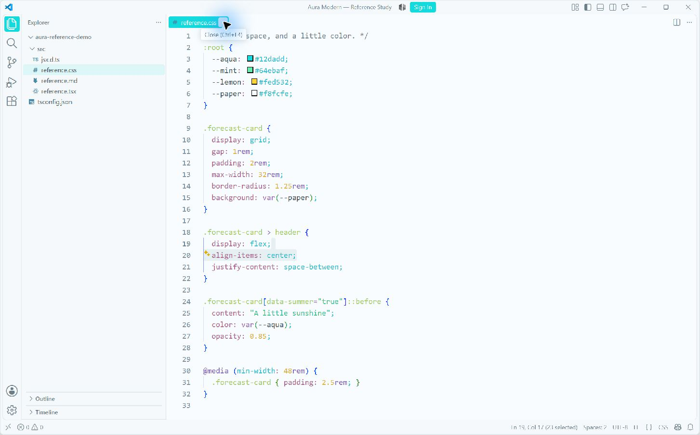
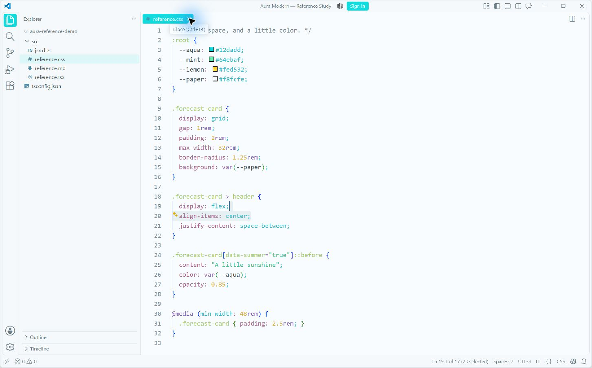
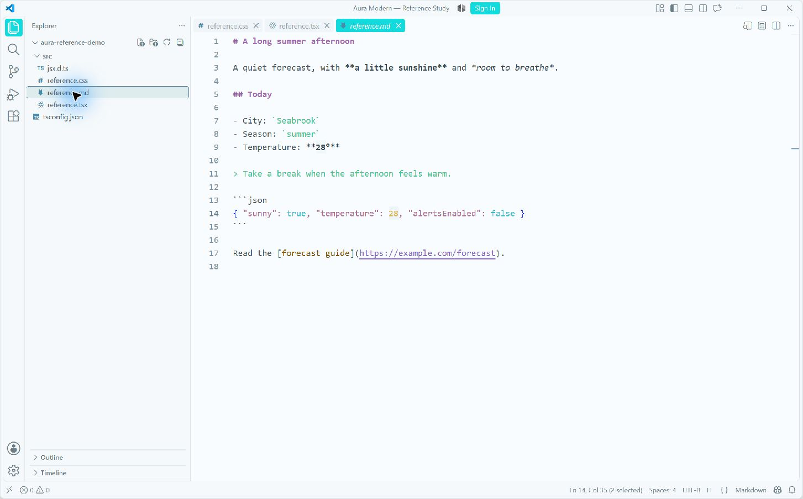

新主题已安装在独立 VS Code 试用窗口。打开主题选择器，搜索 Aura Aqua Lime Light。


原生截图局部放大 2 倍，没有重新着色。鼠标指针覆盖了图标的一部分，可在 VS Code 内实际悬停查看。

Modern UI 的圆角标签由 VS Code 隐藏普通边框；当前版本没有独立的 Modern Editor Tab 边框配色项。主题保留填充与交互反馈。
Aura Modern 0.8.0 · 9 个主题 · 249 项测试通过